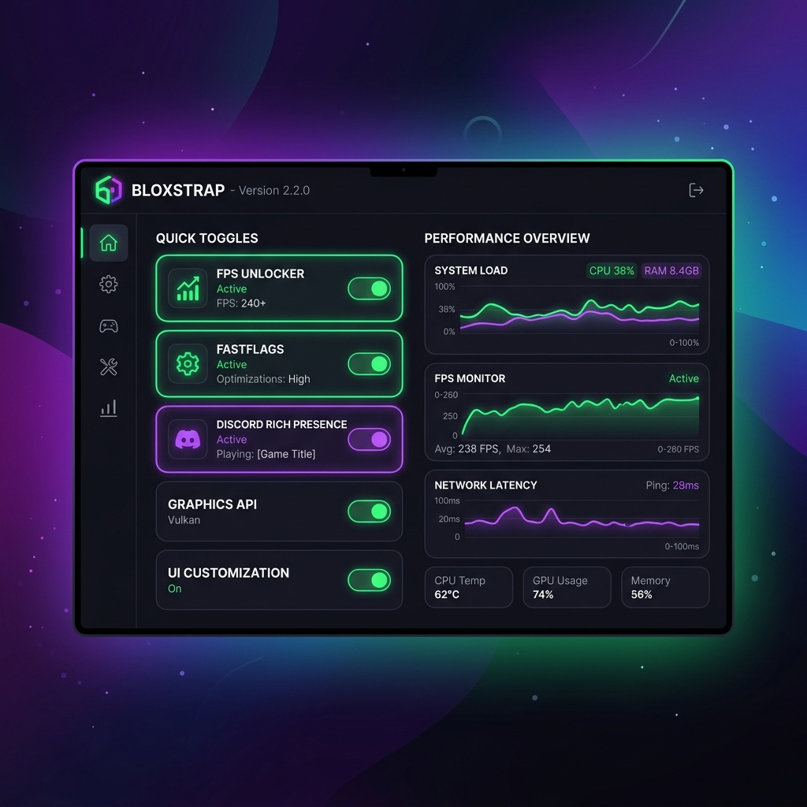

Bloxstrap: The Ultimate Alternative Roblox Bootstrapper & Customizer
Re-engineer your desktop Roblox client with Bloxstrap. Access hidden FastFlags, unlock your framerate for ultra-fluid rendering, integrate detailed Discord activity status, and manage persistent mods.

Unlock Your Roblox Client Potential Safely
Say goodbye to standard engine caps. Master your Bloxstrap setup with precise utility parameters built for high-performance PC players.
FastFlag Dashboard
Access hidden Roblox development configurations and graphics engine settings without complex file editing. Customize rendering paths directly.
FPS Frame Unlocker
Bypass the built-in 60 Hz Roblox display barrier. Unlock higher frame rates to match modern high-refresh gaming monitors for maximum responsiveness.
Persistent Client Mods
Apply custom fonts, retro sounds (like the classic 'oof'), and custom mouse cursors. Bloxstrap ensures modifications remain intact even after official updates.
Interactive FastFlag Control Panel
Test real Bloxstrap FastFlag configuration variations and calculate estimated performance boosts interactively.
Configuration Editor
Simulated System Diagnostics
Loading system configuration...
How to Configure Bloxstrap
Follow these clear steps to install and set up your alternative Bloxstrap bootstrapper safely on Windows.
Obtain the Installer
Download the latest official Bloxstrap installer package. Make sure it is compiled for x64 architecture matching modern Windows setups.
Configure Settings
Run the Bloxstrap launcher dashboard. Browse the sidebar sections to select your preferred UI themes, FPS targets, and Discord modules.
Import Client Mods
Place custom graphics packs, replacement sound effects, or custom game fonts into the dedicated Mod folder within the Bloxstrap directory.
Launch & Play
Click Play. Bloxstrap will initialize, configure the chosen FastFlags, apply custom elements, and launch the core Roblox client smoothly.
Technical Safety & Compliance Review
Understanding the architecture of alternative loaders is critical to maintaining account security. Bloxstrap stands apart from typical scripting utilities because it operates under clear safety guidelines.
No Code Injection
Unlike traditional cheat tools, Bloxstrap does not inject code into the active memory space of Roblox. It simply configures startup variables and patches standard media folders, rendering it completely safe from anti-cheat detection methods.
Open-Source Transparency
Every script, build file, and dependency inside the Bloxstrap application is open-source and publicly auditable. Users can review the active codebase directly on GitHub, ensuring there are no hidden payloads or security issues.
Technical Support FAQ
Get straightforward answers to the most common questions regarding Bloxstrap customization and optimization.
No. Bloxstrap acts strictly as a wrapper and bootloader. It configures public launch parameters (FastFlags) that are natively supported by Roblox's engine, meaning it does not trigger any anti-cheat detection triggers.
FastFlags are server-side toggles used by Roblox engineers to test new settings, graphic features, and bug fixes. Bloxstrap lets you edit these locally to activate improved shadows, optimize memory pools, or use modern graphic engines.
Yes. After booting the main client, the Bloxstrap launcher minimizes into a lightweight system tray icon to monitor Discord Rich Presence integrations and server details with negligible RAM usage.
Simply open the Bloxstrap configuration menu and click uninstall. Your game configuration will easily revert to standard launch processes without needing a full game re-installation.